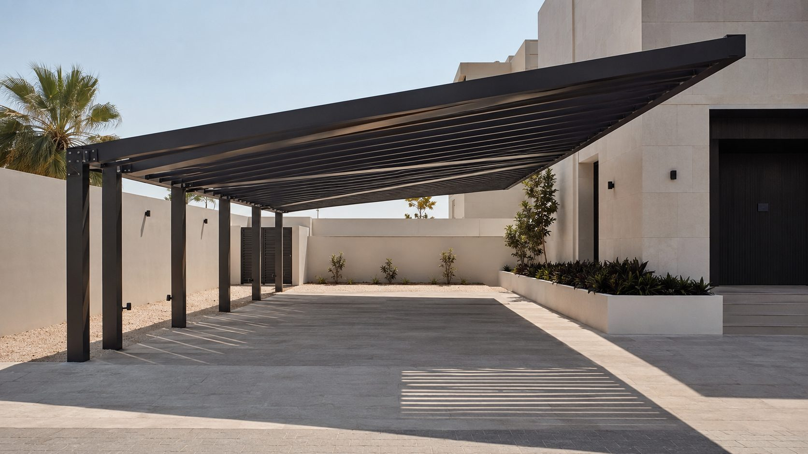
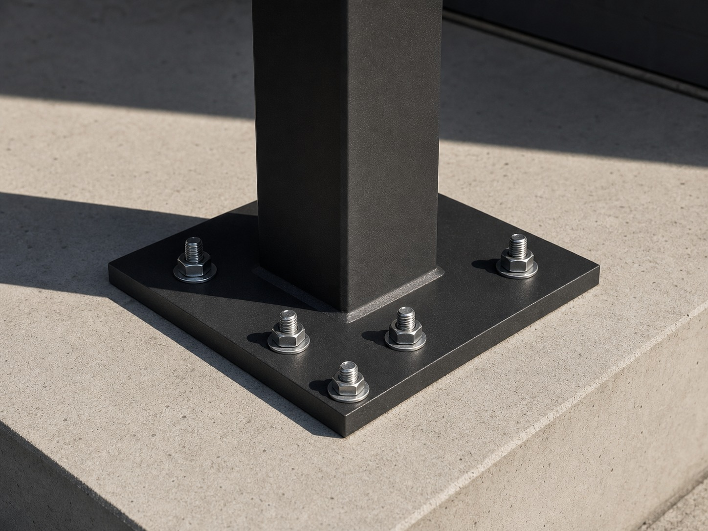
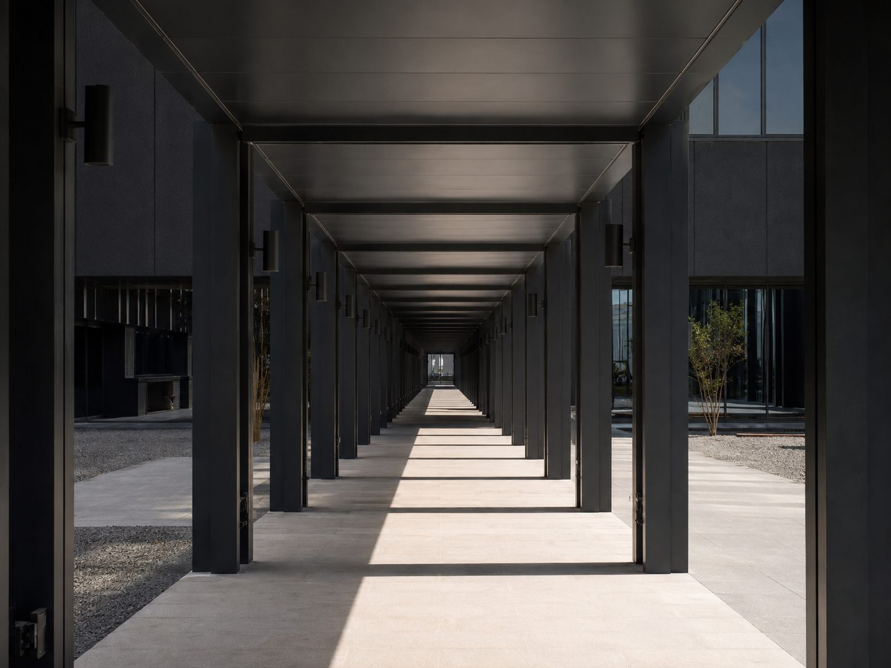

Services · Canopies & Car Shades
Cover that holds in a shamal
Car shades, entrance canopies and walkway covers — the ones that fail fail at the fixings, not the fabric.

Cantilever 5500 mmWhat we build
Cover types
Cantilever Car Shade
Single-side posts, clear parking bay. No columns to reverse into.
Post-Supported
Four-post or spine structures for multiple bays. Lower cost per square metre.
Entrance Canopy
Over doors and drop-off points. Usually structurally tied to the building.
Walkway Cover
Continuous runs for commercial, school and facility circulation routes.
01 / Climate · 03 / Reliability
Wind uplift is the real load case
People buy shade thinking about sun. What removes a canopy is wind lifting it from underneath. A cantilever structure concentrates that force into a small number of fixings and a foundation that has to resist overturning.
We size the section, the base plate, the anchors and the footing for uplift — and we write the wind-load assumption onto the quote so it can be checked. Roof material, whether sheet, polycarbonate or tensioned fabric, is specified with its UV rating.
Aluminium framing is standard for coastal and near-coastal sites. Where steel is used, it is galvanised before coating, not painted over bare.

M20 anchors × 6
Bay spacing 3000 mm02 / Design fit · 04 / Installation
Drainage decides where the stains go
Rain is infrequent here, but dust plus rain equals streaking down a wall or across a driveway. We set fall direction and discharge point deliberately, and integrate drainage through the posts where the layout allows.
Installation covers foundation preparation or verified fixing to existing slab, protection of paving during works, and full site clearance. Vehicle access is maintained where possible, and we tell you in advance when it can't be.
How many bays, and what's underneath?
Send the area and a photo of the ground surface — the foundation options depend on what's already there.
Quote a Canopy →